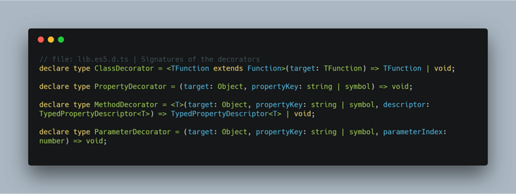

使用装饰器是如何构建 Nodejs 路由的
Javascript 中的装饰器（Decorator）是我非常喜欢的一个特性，它可以很好地提高代码的复用性和自解释性。虽然它目前还处在建议征集的第二阶段，但在 TypeScript 里已经做为了一项实验性特性予以支持。
比如，我们可以用如下方式定义 Controller：
@Controller('/cats')
class CatsController {
@Get()
findAll(): string {
return 'This action returns all cats';
}
@Get('/:id')
findOne(): string {
return 'This action returns a specified cat';
}
}
如果熟悉 Spring Boot，会觉得这样的定义非常亲切。我们使用了 @Controller 和 @Get 装饰器，表示调用 /cats 返回所有的猫，调用 /cats/:id 返回按 id 查找的猫。这样的定义形式让代码看上去可读性很强，也清爽多了。
实际上这种写法在 TypeScript 中是比较常见的，比如 NestJs 框架就提供这种方式。
本文简单介绍如何使用装饰器和反射实现这种功能。
装饰器概述
在此之前，我们先回顾一下装饰器的用法。装饰器可以被附加到 类声明（Class），属性（Property）， 访问符（Accessor），方法（Method）或 参数(Parameter) 上，对应的签名如下（其中访问符和属性装饰器签名相同）：

它们分别可以标注到对应的位置：
@classDecorator // 类装饰器
class Hero {
@propertyDecorator // 属性装饰器
name: string = "";
@propertyDecorator
_hp: number = 100;
@methodDecorator // 方法装饰器
attack(@paramDecorator enemy: Enermy /* 参数装饰器 */) {
}
@propertyDecorator // 访问符装饰器
get hp() {
return this._hp;
}
}
装饰器被调用时，第一个参数一般要么能拿到类的构造函数，要么能拿到类的原型对象，利用这个参数可以对类或者原型对象进行修改。
反射
Reflect 对象是 ES6 为了操作对象而提供的新 API，这里需要用到的是其中的 Metadata API，它是 ES7 的一个提案，主要用来在声明的时候添加和读取元数据。我们主要用到 defineMetadata 定义元数据、 hasMetadata 判断元数据是否存在 和 getMetadata 获取元数据。具体函数签名见 Metadata Proposal。
要使用 Metadata API，我们需要引用 reflect-metadata 这个库。
思路
于是我们现在手上有两样工具，一个是装饰器，当我们使用 @Controller、@Get、@Post 等标注在类或方法上时，我们可以获取到类的构造函数、类的原型对象，根据装饰器传入的参数，能获取到路由的路径和请求方法。
但我们还需使控制器可以运行，这时就可以利用反射，拿到装饰器传入的参数和对应的请求方法，构造出对应的路由。
实现
这里以 Express 框架为例，我们实现对应的装饰器，让 Express 可以支持装饰器标注来添加路由，首先新建 index.ts 如下：
import * as express from 'express';
import { Request, Response } from 'express';
const app = express();
app.get('/', (req: Request, res: Response) => {
res.send('Hello World!');
});
app.listen(3000, () => {
console.log('Started express on port 3000');
});
这是一个基础的 Express 入口文件。
@Controller 装饰器
接下来实现 @Controller 装饰器，它是标注在控制器 类 上的，用来标注这个类是一个控制器类，并提供一个路由前缀作为参数。因为类装饰器第一个参数是类的构造函数，所以我们将该装饰器传入的前缀参数定义到构造函数的元数据中，key 为 prefix。
// Controller.ts
export const Controller = (prefix: string = ''): ClassDecorator => {
return (target: Function) => {
Reflect.defineMetadata('prefix', prefix, target);
};
};
@Get 装饰器
@Get、@Post 等作为请求方法的装饰器实现原理都是相似的，这里以 @Get 方法举例，这个装饰器应该标识请求的方式和请求的路由，另外保存被标注的函数，因为这个函数将被作为路由函数调用。
我们首先定义一个元数据接口：
// RouteDefinition.ts
export interface RouteDefinition {
path: string;
requestMethod: 'get' | 'post' | 'delete' | 'options' | 'put';
methodName: string;
}
@Get 装饰器的实现如下：
// Get.ts
import {RouteDefinition} from './RouteDefinition';
export const Get = (path: string): MethodDecorator => {
return (target, propertyKey: string): void => {
if (!Reflect.hasMetadata('routes', target.constructor)) {
Reflect.defineMetadata('routes', [], target.constructor);
}
const routes = Reflect.getMetadata('routes', target.constructor) as Array<RouteDefinition>;
routes.push({
requestMethod: 'get',
path,
methodName: propertyKey
});
Reflect.defineMetadata('routes', routes, target.constructor);
};
};
@Get 装饰器是标注在方法上的，所以第一个参数是类的原型对象，我们这里还是根据它再获取到类的构造函数，在元数据中添加一个 routes 数据，用来保存这个控制器的所有路由。
最后，我们在 Express 的入口文件中，就可以取得所有的控制器，根据反射拿到所有的路由了。
import 'reflect-metadata';
import * as express from 'express';
import { Request, Response } from 'express';
import CatsController from './CatsController';
import { RouteDefinition } from './RouteDefinition';
const app = express();
app.get('/', (req: Request, res: Response) => {
res.send('Hello there!');
});
app.listen(3000, () => {
console.log('Started express on port 3000');
});
// 构造路由
[
CatsController
].forEach(controller => {
const instance = new controller();
// 获取 prefix
const prefix = Reflect.getMetadata('prefix', controller);
// 获取 routes
const routes: Array<RouteDefinition> = Reflect.getMetadata('routes', controller);
routes.forEach(route => {
// 添加 Express 路由
app[route.requestMethod](prefix + route.path, (req: express.Request, res: express.Response) => {
instance[route.methodName](req, res);
});
});
});
参考
- Routing with TypeScript decorators for node applications
- Decorate your code with TypeScript decorators